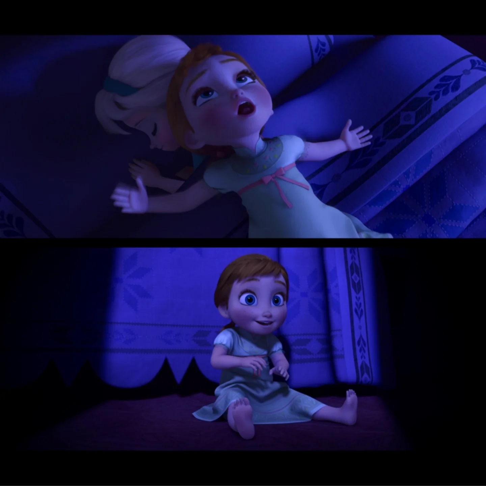
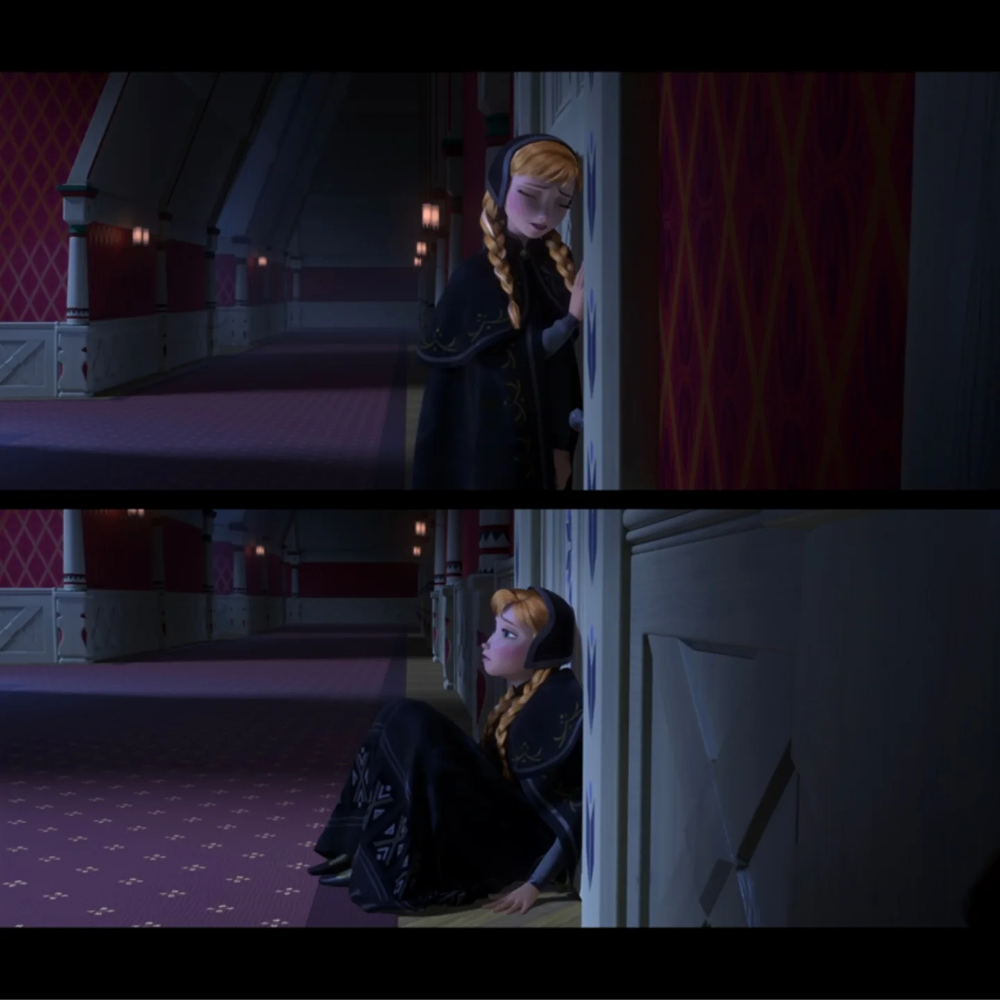
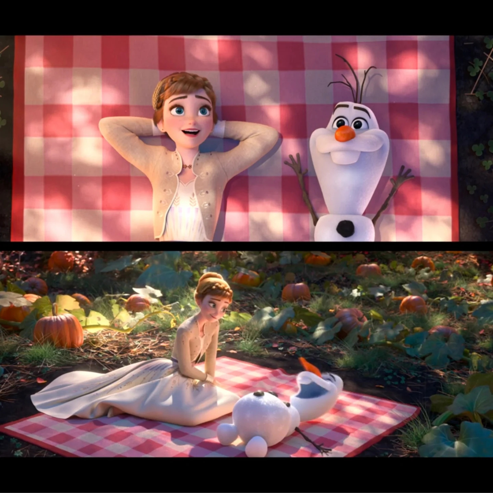
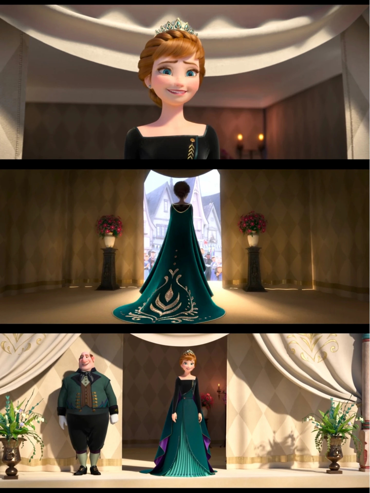
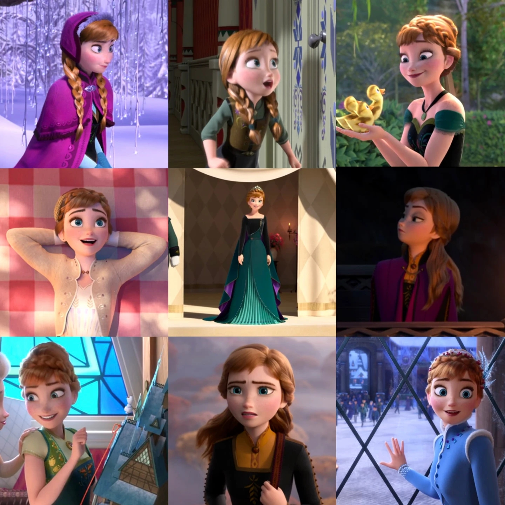

🎨 图鉴 · 角色图鉴
安娜图鉴
从天真公主到女王
6
本卷页数
🖼️
图鉴
中/英
双语
🌻 角色图鉴
安娜图鉴
从天真少女到阿伦黛尔女王——安娜的造型变化记录了她从冲动勇敢到成熟稳重的成长历程。
18
造型图
6
时期
2部
电影
番外
衍生
🌻 安娜是艾莎的妹妹，也是《冰雪奇缘》系列的情感核心。她乐观勇敢、永不放弃，从一个冲动的少女成长为独当一面的阿伦黛尔女王。她的造型变化记录了她的成长历程——从鲜艳活泼的少女装到稳重优雅的女王礼服，每一套都有故事。
👗 童年时期

童年安娜
童年的安娜活泼好动，与玩偶为伴的画面体现了她的天真与孤独——姐姐已经不再和她玩了。

敲门找姐姐
安娜一遍遍敲艾莎的门，"你想堆个雪人吗"成为F1最催泪的台词之一。

被误伤后的安娜
被艾莎魔法误伤后，安娜的头发中多了一缕白发，这是她为爱付出的第一个印记。
👗 F1·加冕前后

加冕日睡裙
加冕日清晨安娜的绿色睡裙，兴奋地在床上跳来跳去，与艾莎的紧张形成鲜明对比。

加冕绿裙
安娜的加冕礼服采用绿色与金色，与艾莎的紫色形成对比，绿色象征生命与希望。

日常绿裙
加冕典礼后的日常造型，绿色连衣裙更加轻便，是安娜最具代表性的日常造型。

黑色丧服
父母去世后的黑色丧服，安娜的悲伤与艾莎的沉默构成了姐妹关系的最低谷。
👗 F1·寻姐之旅

紫色斗篷
安娜出发寻找艾莎时的紫色斗篷，是她"为爱出发"的标志性造型，斗篷在风雪中飘动的画面成为经典。

雪地旅行装
在北山雪地中的旅行装，加厚的斗篷与靴子体现了实用性，安娜在风雪中跋涉的画面令人动容。

结局绿裙
F1结局安娜的绿色春装，冰雪融化后换上的轻盈裙装，象征春天与希望的回归。
👗 F2·探险与成长

F2绿色家居裙
F2开篇安娜的绿色家居裙，更加成熟优雅，体现了她作为王储的成长。

野餐裙
Some Things Never Change中的野餐造型，轻松愉快的氛围是F2中少有的"日常"时刻。

紫色旅行斗篷
进入魔法森林时的紫色斗篷，与F1的寻姐斗篷呼应，但这次她不是去救姐姐，而是与姐姐并肩作战。

探险装举火把
在魔法森林中举着火把的探险装，安娜的勇敢与决心在这个画面中得到充分体现。
👗 F2·阿伦黛尔女王

女王礼服
F2结局安娜加冕为阿伦黛尔女王的礼服，深蓝色与金色的搭配参考了艾莎的加冕礼服，但更加稳重。

女王造型
安娜女王的完整造型，发髻上的麦穗象征丰收与责任，她终于从"需要被保护的妹妹"成长为"保护所有人的女王"。
👗 番外与衍生

圣诞番外冬裙
Olaf's Frozen Adventure中的浅蓝色冬裙，白色毛领与雪花装饰增添了节日氛围。

全系列造型合集
从童年到女王，安娜的造型变化记录了她的成长历程，每一套都有故事。
💡 温暖的视觉语言
安娜的视觉语言是"温暖"——红色头发、雀斑、绿色服装，这些元素共同构成了一个充满生命力的角色。与艾莎的冷色调和克制姿态不同，安娜的造型总是更加活泼、更加开放。她的绿色服装象征生命与希望，与艾莎的蓝色形成完美的姐妹互补。
📌 本页要点
你正在阅读《图鉴》卷的「安娜图鉴」。本页由电影正典、官方设定集与官方小说综合梳理，可作为该主题的速查入口；右侧目录可快速跳转到本页各小节。